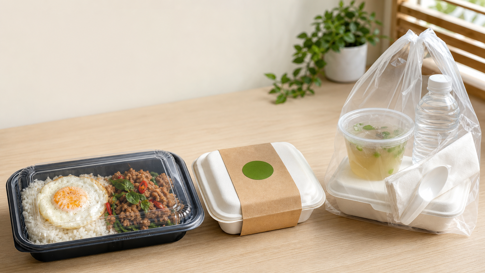

Week 1: Soft Launch
ขาย 12-16 กล่องต่อวัน จำกัด 50 กล่องแรก ราคา 49 บาท เฉพาะเมนูหลัก และให้ไข่ดาวฟรีรอบถัดไปสำหรับลูกค้าที่ส่งรีวิว

Proposal เปิดขายเดือนแรก 09:00-15:00 น.
แผนเปิดร้านข้าวออนไลน์แบบคุมเงินสด คุมเวลาทำงาน และเริ่มขายจริงจากรอบกลางวัน พร้อมโปรโมชัน 4 สัปดาห์และงบเดือนแรก
ครอบคลุมของสด ของแห้ง แพ็กเกจ โปรโมชัน และเงินสำรองเดือนแรก
แยกราคาหน้าร้านกับราคาบนแพลตฟอร์มเพื่อไม่ให้ขาดทุนจาก GP
เน้นรอดจริงก่อน แล้วค่อยเพิ่มรอบขายหลังต้นทุนและเวลานิ่ง
Proposal เพื่อขายเอาเงิน
แผนนี้ออกแบบสำหรับช่วงเริ่มต้นที่ทำงาน 09:00-15:00 น. โดยขายรอบกลางวันเป็นหลัก รับพรีออเดอร์ล่วงหน้า และซื้อของสดเป็นรอบ 2-3 วันเพื่อลดเงินจมและลดของเสีย
ขาย 12-16 กล่องต่อวัน จำกัด 50 กล่องแรก ราคา 49 บาท เฉพาะเมนูหลัก และให้ไข่ดาวฟรีรอบถัดไปสำหรับลูกค้าที่ส่งรีวิว
ดันยอด 18-22 กล่องต่อวัน ซื้อครบ 3 กล่องส่งฟรีในระยะใกล้ ลูกค้าเก่าซื้อซ้ำรับไข่ดาวฟรี และทำเซตข้าวพร้อมน้ำ 65 บาท
ขาย 24-28 กล่องต่อวัน พรีออเดอร์ 5 กล่องขึ้นไปส่งฟรี แถมไข่ดาว 2 ฟอง และลด 5 บาทต่อกล่องเมื่อสั่งล่วงหน้า
ขยับเป็น 30-36 กล่องต่อวัน กลับสู่ราคา 55 บาท ใช้บัตรสะสมซื้อครบ 5 กล่องรับไข่ดาวฟรี และขายแพ็กมื้อกลางวัน 5 วัน 260 บาท
ตารางทำงาน
ค่าธรรมเนียมแพลตฟอร์ม
ราคาใน LINE/Facebook/รับเองควรเป็นราคาหลัก ส่วนราคา Grab, LINE MAN, ShopeeFood หรือแพลตฟอร์มอื่น ต้องบวกเผื่อ GP, VAT บนค่าธรรมเนียม, โปรโมชัน และความเสี่ยงเงินเข้าช้า
เหมาะกับเดือนแรกที่สุด รับเงินเร็ว คุมลูกค้าเอง โปรโมชันไม่หนัก
ใช้เป็นสมมติฐานกันพลาด เพราะมี GP และ VAT บนค่าธรรมเนียม
บวกเผื่อกล่อง โปรส่วนลด เมนูเสียหาย และต้นทุนแกว่ง
| เมนู | ต้นทุนรวมต่อกล่อง | ขายตรง | คาดกำไรขายตรง | ราคาแพลตฟอร์ม | เงินรับหลังหัก 32% | คาดกำไรแพลตฟอร์ม |
|---|---|---|---|---|---|---|
| ข้าวกะเพราหมูสับ | 32 | 55 | 23 | 79 | 54 | 22 |
| ข้าวกะเพราไก่ | 30 | 55 | 25 | 75 | 51 | 21 |
| ข้าวไก่กระเทียม | 31 | 55 | 24 | 75 | 51 | 20 |
| ข้าวไข่เจียวหมูสับ | 24 | 45 | 21 | 65 | 44 | 20 |
| เซตข้าว + ไข่ดาว + น้ำ | 43 | 75 | 32 | 89 | 61 | 18 |
ตัวเลขนี้ใช้สมมติฐานค่าหักรวม 32% สำหรับแพลตฟอร์ม เพื่อวางแผนแบบระวังตัว ราคาจริงต้องตรวจในสัญญาร้านค้าแต่ละแอปก่อนเปิดขาย
แพ็กเกจให้สมราคา
ไม่ควรใช้แพ็กเกจหรูเกินไปในเดือนแรก ให้ใช้กล่องที่ดูสะอาด แข็งแรง ปิดแน่น และถ่ายรูปสวย เพราะลูกค้าตัดสินความคุ้มค่าจากหน้าตาอาหาร ปริมาณ และความเรียบร้อยตอนเปิดกล่อง

งบเดือนแรก
ประมาณการรายได้
ตัวเลขนี้เป็นประมาณการแบบระวังตัว ใช้ฐานเปิดขาย 22 วันต่อเดือน ผสมขายตรง 70% และแพลตฟอร์ม 30% โดยนับรายได้สุทธิหลังหักค่าธรรมเนียมแพลตฟอร์มแล้ว แต่ยังไม่ถือเป็นเงินเดือนเจ้าของเต็มจำนวน
| ระยะเวลา | เป้ากล่อง/เดือน | เฉลี่ย/วัน | รายได้สุทธิ/เดือน | เงินเหลือก่อนค่าแรงเจ้าของ | สถานะธุรกิจ |
|---|---|---|---|---|---|
| 1 เดือน | 420-510 | 19-23 | 24,000-29,000 | 5,000-8,000 | ยังแบกโปรและเก็บข้อมูล ห้ามถอนเงินเยอะ |
| 3 เดือน | 750-900 | 34-41 | 45,000-55,000 | 15,000-22,000 | เริ่มนิ่งถ้าลูกค้าซื้อซ้ำเกิน 25% |
| 6 เดือน | 1,050-1,250 | 48-57 | 68,000-82,000 | 28,000-38,000 | เริ่มอยู่ได้ ถ้าของเสียต่ำและทำทันเวลา |
| 1 ปี | 1,300-1,600 | 59-73 | 88,000-110,000 | 38,000-55,000 | นิ่งพอขยายรอบขาย/จ้างพาร์ตไทม์ |
พอหมุนค่าวัตถุดิบและโปรพื้นฐาน แต่ยังไม่ควรถอนเงินใช้เยอะ
ยอดพรีออเดอร์คาดเดาได้ ลูกค้าซื้อซ้ำ และเมนูขายดีชัดเจน
มีเงินเหลือพอจ่ายตัวเองบางส่วนโดยไม่กระทบเงินซื้อของรอบถัดไป
เริ่มสั่งอาหาร
เลือกเมนู จำนวน ท็อปปิง และรอบรับอาหาร ระบบจะสรุปข้อความออเดอร์ให้พร้อมส่งในแชต
จัดส่งและรับเอง
ลูกค้าส่งเมนู จำนวน ที่อยู่ และเวลาที่ต้องการรับอาหาร
เตรียมวัตถุดิบก่อนเปิดขายและทำอาหารตามคิวเพื่อคุมเวลา
กล่องสะอาด ปิดแน่น แยกเครื่องเคียง และแจ้งลูกค้าก่อนจัดส่ง
พร้อมเปิดขาย
แก้ชื่อร้าน เบอร์โทร พื้นที่ส่ง และลิงก์ LINE/Facebook ในไฟล์เว็บให้ตรงกับร้านจริงก่อนเผยแพร่.